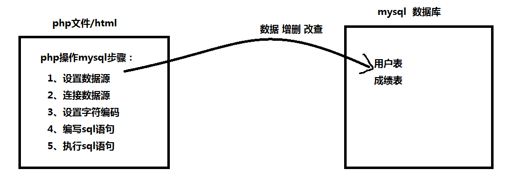

php
http 端口
服务器如何接受客户端请求的数据 $_POST[] $_GET[]
php文件生成动态网页
php数组如何转成json json_encode()
xss
mysql :
创建数据库
创建表 --- 字段 主键(不重复 不能为空)
表数据操作 ： 增insert 删delete 改update 查select
2、学生成绩表
1、设计数据库
创建 用户表 学生成绩表
2、php操作mysql步骤

3、注册用户信息 原理图

php操作mysql步骤
前三句为操作每个数据库的公共代码 content：内容 connect：连接
//设置字符编码
header("content-type:text/html;charset=utf-8");
//1、设置数据源（登录数据库）
$db = mysql_connect("localhost","root","root");//第一个参数服务器地址，第二个参数登录用户名，第三个登录密码
//2、连接数据库（连接数据库）
mysql_select_db("cool",$db);//第一个参数数据库名字，第二个参数数据源
//3、设置字符编码
mysql_query("set names utf8");//设置字符编码格式
增：php操作mysql --- 增加
//4、编写sql语句
$str = "insert into user(uname,upwd) values ('$uname','$upwd')";//表名和字段不需要加引号
//5、执行sql语句
$row = mysql_query($str);//执行 insert delete update时，返回值是被操作（受影响）的行数,被操作的行数可以为零行
查：php操作mysql ---查
【注】：用户名相同可以靠后台处理，此处不考虑，即用户名唯一，一个用户名只能得到一个密码 resource：资源 fetch：取出，拿来，取来
//4、编写mysql语句 --- 查
$sql = "select * from user where uname = '$uname'";
//5、执行mysql语句
$res = mysql_query($sql);//执行查的mysql语句，结果返回一个 结果集 如果查不到返回为空
//echo $res;//Resource id #5
//取出结果集中的数据
$arr = mysql_fetch_array($res);//fetch //取出结果集中的一行数据 返回一个数组
print_r($arr);//php中的数组只能靠print_r（）输出
/*echo "<br>",$arr["uname"];//数组可以靠键名或者下标取出
echo "<br>",$arr["upwd"];
echo "<br>",$arr[2],"<br>";*/
$arr2 = mysql_fetch_array($res);//多次取，取的行不同，从符合条件的第一个开始到结束
【注】：当mysql_query()执行的是查询语句的时候，返回的是一个结果集，结果集不能直接用 echo 输出，如果直接用 echo mysql_query( 查询语句 )，就会在页面提示 Resource Id #4，注意这是一个浏览器提示的是一个错误，不过也说明错误对象是一个结果集，而结果集中数据需要通过 mysql_fetch_array() 取出结果集中的一行数据
【注】：mysql_fetch_array() 函数从结果集中取得一行作为关联数组，或数字数组，或二者兼有返回根据从结果集取得的行生成的数组，如果没有更多行则返回 false。
<?php
header("content-type:text/html;charset=utf-8");
//设置数据源
$db = mysql_connect("localhost","root","root");//第一个参数是服务器地址，然后是登录服务器账号和密码
//连接数据源
mysql_select_db("cool",$db);//第一个参数是数据库名，第二个是数据库在哪个服务器下
//设置字符格式
mysql_query("set names utf8");
//编写sql语句
$sql = "select * from wtable";
//执行sql语句
$res = mysql_query($sql);//当mysql_query()执行的是查询语句的话，返回的是结果集，而执行增加，删除，更改，都是返回的是操作的行数
// echo $res;//Resource id #4 这是一个错误，因为返回的是一个结果集，不能直接echo，应该对结果集使用 mysql_fetch_array() 取出结果集中的一行数据
$arr = mysql_fetch_array($res);//取出结果集中的一条数据，每次取一条，从第一条开始，取完后，这句话结果为空
/*
* mysql_fetch_array() 函数从结果集中取得一行作为关联数组，或数字数组，或二者兼有返回根据从结果集取得的行生成的数组，如果没有更多行则返回 false。
*/
print_r($arr);
?>
删：php操作mysql --- 删
删除是通过超链接？后的内容通过get方式传送，所以也要用get方式接受
<a href='delete.php?id={$arr['sid']}'>删除</a>//?后的数据是通过get传送的
$id = $_GET['id'];//?后的数据是通过get的方式传送的,所以用get接收
【注】：通过超连接后的问号传送需要操作的序号
<?php
include "public.php";
//查询数据库scoreStu
$sql = "select * from scroeStu";
$res = mysql_query($sql);
//$arr = mysql_fetch_array($res);
echo "<table width=500 border=1>";
echo "<tr><td>编号</td><td>姓名</td><td>语文</td><td>数学</td><td>操作</td></tr>";
while($arr = mysql_fetch_array($res)){
echo "<tr><td>{$arr['sid']}</td>
<td>{$arr['sname']}</td>
<td>{$arr['chinese']}</td>
<td>{$arr['math']}</td>
<td><a href='delete.php?id={$arr['sid']}'>删除</a>|<a href='update.php?id={$arr['sid']}'>更改</a></td></tr>";//?后的数据是通过get传送的
}
echo "</table>";
?>
<h3><a href="add.html">添加信息</a></h3>
用get接收数据
<?php
include "public.php";
$id = $_GET['id'];//?后的数据是通过get的方式传送的,所以用get接收
//echo $id;
//写删除的mysql语句并执行
$sql = "delete from scroeStu where sid=$id";
$row = mysql_query($sql);
if($row){
echo "<script>alert('删除成功');location.href='scoretab.php'</script>";
}else{
echo "<script>alert('删除失败');location.href='scoretab.php'</script>";
}
?>
改：php操作mysql --- 改
用隐藏域获取编号
<input type="hidden" name="sid" value="<?php echo $arr['sid'] ?>"/>//type="hidden"为隐藏域
得到超链接a通过？以get的方式传送的数据得到编号
根据编号把查询改行，把该行的内容显示到input中
然后再把改动过的信息传给数据库
<?php
include 'public.php';
$id = $_GET["id"];
//查
$sql = "select * from scroeStu where sid = $id";
$res = mysql_query($sql);//查的返回值是结果集
$arr = mysql_fetch_array($res);//把结果转成数组
?>
<form action="updateDo.php" method="post">
<input type="hidden" name="sid" value="<?php echo $arr['sid'] ?>"/>//type="hidden"为隐藏域，传送id编号，有隐藏避免了被用户看到
用户名：<input type="text" name="sname" value="<?php echo $arr['sname'] ?>"/><br />
语文：<input type="text" name="chinese" value="<?php echo $arr['chinese'] ?>"/><br />
数学：<input type="text" name="math" value="<?php echo $arr['math'] ?>"/><br />
<input type="submit" value="更改学生成绩"/>
</form>
updateDo程序
<?php
include "public.php";
$sid = $_POST['sid'];
$sname = $_POST['sname'];
$math = $_POST['math'];
$chinese = $_POST['chinese'];
//改
$sql = "update scroestu set sname='$sname',chinese=$chinese,math=$math where sid=$sid";
$row = mysql_query($sql);
if( $row ){
echo "<script>alert('修改成功');location.href='scoretab.php';</script>";
}else{
echo "<script>alert('修改失败');location.href='update.php';</script>";
}
?>